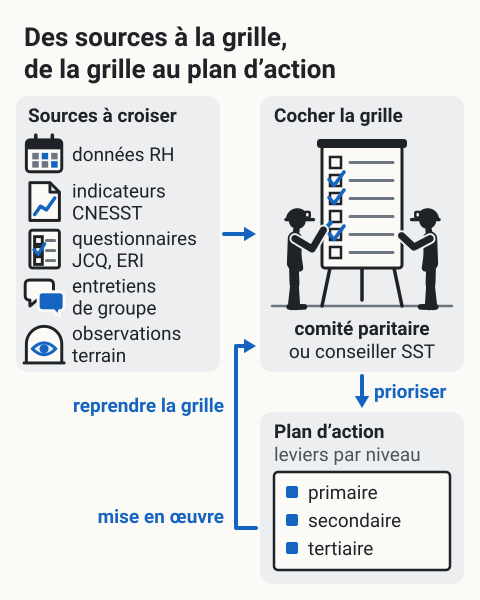

Grille INSPQ d'identification des RPS
L'essentiel : La Grille de l'INSPQ est l'outil québécois officiel pour identifier les risques psychosociaux dans une entreprise. Gratuite, applicable à tous les secteurs, elle couvre 7 catégories de RPS et propose une démarche structurée d'identification. C'est souvent la première étape concrète quand un employeur veut se conformer à la LMRSST.
Présentation
Grille d'identification des risques psychosociaux du travail : outil développé par l'Institut national de santé publique du Québec (INSPQ) pour aider les employeurs à identifier les RPS présents dans leur milieu, conformément aux exigences de la LMRSST.
Outil gratuit, téléchargeable sur le site de l'INSPQ. Conçu pour être utilisable par un conseiller SST ou un comité paritaire, sans expertise pointue en psychologie du travail.
Pour un employeur minier qui démarre la conformité LMRSST : c'est l'outil le plus accessible et reconnu pour faire l'inventaire initial des RPS.
Structure de la grille
La grille couvre 7 grandes catégories de RPS
| Catégorie | Exemples concrets |
|---|---|
| 1. Charge de travail | Quantité, rythme, interruptions, délais |
| 2. Reconnaissance | Rétroaction, équilibre efforts récompenses |
| 3. Soutien social au travail | Supérieurs, collègues, climat |
| 4. Latitude décisionnelle | Autonomie, utilisation des compétences |
| 5. Information et communication | Clarté, accès, transparence |
| 6. Harcèlement et violence | Conduites vexatoires, agressions |
| 7. Conciliation travail-vie personnelle | Horaires, charge à domicile |
Chaque catégorie est documentée avec : définition, exemples, indicateurs observables, recommandations d'action.
Démarche d'utilisation
| Étape | Action |
|---|---|
| 1. Préparation | Constituer un comité, identifier les sources d'information disponibles |
| 2. Collecte | Entretiens, observations, questionnaires (JCQ, ERI), indicateurs RH |
| 3. Analyse | Cocher la grille, prioriser les RPS identifiés |
| 4. Plan d'action | Sélectionner les leviers d'intervention par niveau (primaire, secondaire, tertiaire) |
| 5. Mise en œuvre | Déployer les actions, suivre les indicateurs |
| 6. Réévaluation | Reprendre la grille annuellement |
Sources d'information à croiser
- Données RH (absentéisme, roulement, accidents)
- Indicateurs CNESST (lésions psychologiques, plaintes)
- Questionnaires validés (JCQ, ERI)
- Entretiens de groupe
- Observations terrain
{kind=link}

Toucher l'image pour l'agrandirLa démarche d’utilisation que décrit cette page : croiser plusieurs sources d’information, cocher la grille, prioriser les RPS identifiés, choisir les leviers du plan d’action par niveau, les mettre en œuvre, puis reprendre la grille.
D’après cette page (Présentation ; Démarche d’utilisation : tableau des étapes et sources d’information à croiser). Voir aussi Démarche de prévention en RPS, étapes et Les trois niveaux de prévention. Schéma de principe : aucune durée ni fréquence d’étape ; les cases cochées ne désignent aucune catégorie.
Application en mines
Adaptations recommandées au secteur minier
| Aspect | Adaptation |
|---|---|
| Échantillonnage | Représenter chaque type de poste, chaque cycle Comparatif des cycles FIFO (14/14, 20/10, 21/7) |
| Confidentialité | Critique en petites équipes ou camps fermés |
| Souterrain | Inclure observation des conditions souterraines (confinement, isolement) |
| FIFO | Inclure période de rotation et vie en camp dans l'évaluation |
| Sous-traitance | Évaluer aussi les conditions des entreprises tierces |
Cycle annuel typique en mine
- T1 : préparation, collecte de données existantes
- T2 : administration de questionnaires JCQ + ERI sur échantillon
- T3 : entretiens et observations
- T4 : analyse, rédaction du rapport, plan d'action
Documents et outils
| Document | Type | Source |
|---|---|---|
| Grille INSPQ d'identification des RPS, document complet | PDF gratuit | inspq.qc.ca |
| Guide d'accompagnement de la grille | INSPQ | |
| Trousse de surveillance de la santé mentale en milieu de travail | INSPQ | |
| EQCOTESST, données québécoises de référence | Rapport | INSPQ |
| Gabarit de programme de prévention CNESST, rôles et pouvoirs | CNESST | |
| Norme CSA Z1003-13 (complémentaire) | Norme | CSA |
Voir le centre de ressources : 📁 Documents et outils.
Pour aller plus loin
Références
- INSPQ. Grille d'identification des risques psychosociaux du travail. Outil officiel.
- INSPQ. Trousse d'outils pour la surveillance de la santé mentale en milieu de travail (2018).
- Vézina, M. et al. (2011). Enquête québécoise sur des conditions de travail, d'emploi et de SST (EQCOTESST). INSPQ.
Articles wiki connexes
Pages qui pointent ici (19)
- ⭐ Top 20 articles SST psychosociale
- 🎯 Démarrage rapide pour conseillers SST SST psychosociale
- 📁 Documents et outils SST psychosociale
- 📖 Glossaire SST psychosociale
- 🔤 Index alphabétique des articles SST psychosociale
- Audit psychosocial complet, méthodologie SST psychosociale
- Charge de travail élevée SST psychosociale
- Conditions de Travail SST psychosociale
- Démarche de prévention en RPS, étapes SST psychosociale
- Dimensions psychosociales du travail SST psychosociale
- Évaluation et Outils SST psychosociale
- Évaluation et Outils SST psychosociale
- Facteurs Organisationnels SST psychosociale
- Faible latitude décisionnelle SST psychosociale
- Iso-strain SST psychosociale
- Obligation d'identifier les risques psychosociaux SST psychosociale
- Programme de prévention vs plan d'action SST psychosociale
- Réseau de la santé publique en SST (DRSP, INSPQ) SST psychosociale
- Risques Psychosociaux (RPS) SST psychosociale